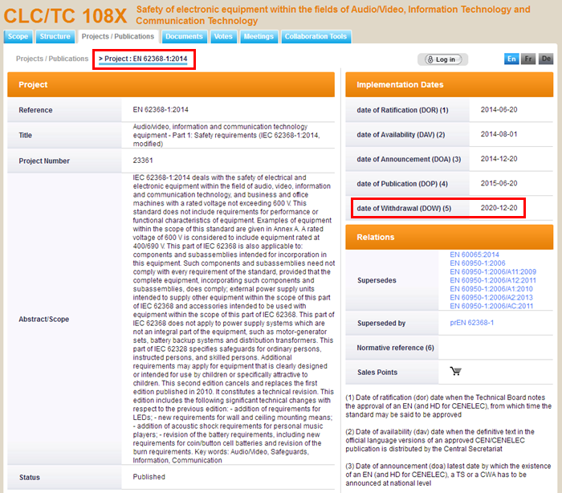

欧洲国家电工委员会 (CENELEC) 其一的技术委员会CLC/TC 108X，正在推行一个将EN 62368-1:2014强制日延长18个月的提案，预计将原订公告的强制日从2019-06-20延长至2020年12月，欧洲技术委员会CLC/TC 108X期望透过此次的提案增加全球信息、影音与通讯产业因应认证标准转换的准备时程。此提案虽然计划性地延长强制实施日多达18个月，但技术委员会CLC/TC 108X也同时计划性地提出另一个EN 62368-1: 2014的标准修正法案，将撤销原有EN 62368-1: 2014章节4.1.1提及的EN 60950-1与EN 60065认证零件允收性条文，此修正法案代表既有EN 60950-1与EN 60065的认证零件未来将不再适用于EN 62368-1的终端产品设计应用，亦代表终端产品制造业与零件供应链必须加紧共同合作后续零件标准更新的作业程序。
欧洲国家电工委员会正式公告EN 62368-1: 2014的DOW延长18个月，也将接续提出欧盟CE标志相关法令时效的官方公报 (Official Journal) 变动申请，未来信息、影音与通讯产品销售至欧盟地区所强制CE标志之下的低电压指令(LVD)，其实行标准EN 62368-1: 2014也将从现行2019-06-20强制日延长至2020-12。
